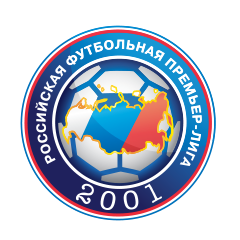

29 октября
16:30
Бесплатный прогноз на Футбол. Матч «Арсенал» – «Тоттенхэм» / 18.11.2017
«Зенит» – «Локомотив»
13.88
x3.80
22.03
В шестом туре Евролиги российского болельщика ждет противостояние двух российских и испанских клубов. О матче ЦСКА – «Валенсия», на который я прямо сейчас собираюсь, я уже написал. Настает очередь подмосковной команды Георгиоса Барцокаса.
На этой неделе «Химкам» снова не удалось обыграть ЦСКА в рамках Единой Лиги ВТБ. Наваждение уже вконец измучило подмосковную публику, и дворец спорта в Химках был заполнен до отказа, лишь бы команда выиграла. Предпосылки были – победа в Мадриде над «Реалом», три победы дома в первых трех турах Евролиги, качественно собранный под Барцокаса ростер. И, конечно, Алексей Швед как главная звезда российского баскетбола прямо сейчас. Но получился очередной конфуз. «Химки» не были плохи, но ЦСКА был безупречно хорош после небольшого провала на старте игры. Чтобы замять понедельничное поражение, надо обыграть уверенно «Басконию». Но там тоже свои перемены.
Баски начинали сезон с Пабло Приджиони в качестве главного тренера. Бывший игрок «Басконии» должен был олицетворять преемственность поколений в баскетбольной стране Басков, но пока еще не дорос. Команда валилась то вправо, то влево, проигрывала много концовок, и в итоге совсем рассыпалась. Приджиони добровольно ушел. Вместо него вытащили из недолгого забвения Педро Мартинеса, действующего чемпиона Испании, между прочим.
Перемены дали плоды мгновенно. «Баскония», которая до пятого тура Евролиги еще не знала ни одной победы, выиграла дома у «Панатинаикоса». Мне довелось смотреть тот матч, и не могу возложить всю похвалу за победу на Педро Мартинеса. Баски выиграли за счет своей воли, своего характера, и невероятного спринта Родрига Бобуа за 1,5 секунды до конца матча. А вот уже в следующей игре испанской Лиги АСВ победа над «Уникахой» была добыта в стиле работы Мартинеса по «Валенсии» - много атак с периметра (24 из 62), хороший процент попадания (38%). И это при том, что не пошел бросок у Джейсона Грейнджера и у Мэтта Дженнинга. «Химкам» на периметре надо защищаться максимально агрессивно, не давая свободных бросков «Басконии».
У «Химок» снова будет провал в «краске», как и в матче против ЦСКА. Томас Робинсом и Мальком Томас не смогут достойно биться против Торнике Шенгелия, Йоханесса Войгтманна и Илиман Диопа. Но игра решится всё равно на периметр – кто больше попадет трехочковых, тот и выиграет матч. Поэтому для
Выбор редакции